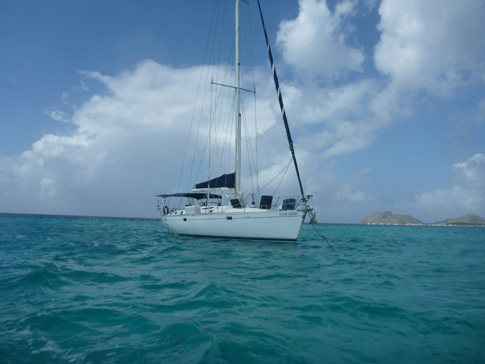
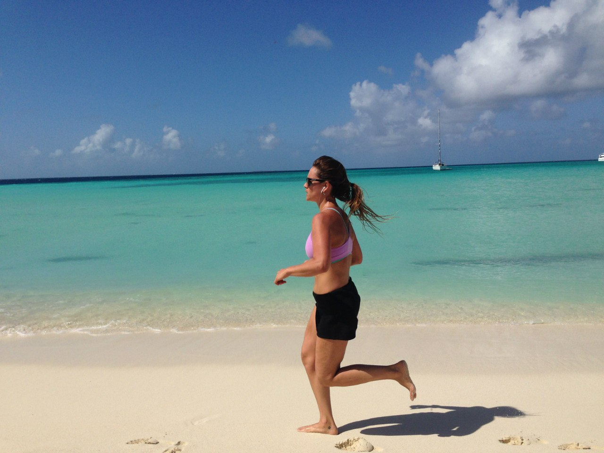
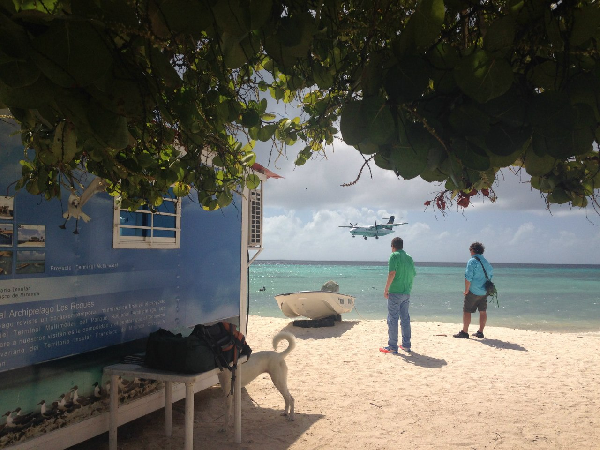

- Холодно лишь под кондиционером
- Очень красивая природа
- Чудесной красоты девушки
- Утро начинается не с cafe
- Вероятность дождя зимой нулевая
- А вот летом наоборот
- Йогурт хорошо, а арепа лучше
- Танцы и музыка
- И самый вкусный в мире ром

И поэтому отправляемся на Лос Рокес
Что еще за "камни"?
Так с испанского переводится название этого архипелага. Сезон дождей закончен, а значит пора. Одной из главных причин, почему туристы продолжают стремиться именно в Венесуэлу, предпочитая ее другим странам, является Карибское побережье. Именно здесь находятся удивительные, ни с чем не сравнимые белоснежные пляжи, многие из которых могут и по нынешний день похвастаться девственной чистотой и безлюдностью. Также здесь находится известный архипелаг Лос Рокес. И автор сего текста праздновал здесь Новый Год!
Этот архипелаг, состоящий из 350 островов, является удивительной находкой для тех, кто хочет насладиться не испорченным цивилизацией раем. Здесь можно кататься на серфинге, заниматься дайвингом и плавать с морскими черепахами, собирать кокосы или огромные ракушки, любоваться роскошными морскими звездами. Добраться можно самолетом из Каракаса - полчаса полета и вы в раю. Там можно без проблем найти жилье; даже если вы заранее не договаривались с хозяевами на Гранд Роке (главный остров Архипелага) всегда есть несколько свободных пасад (мотелей).


Но у нас все было еще круче
Новый 2014-й год же. Зачем снимать жилье, если можно снять сразу яхту? Так мы и сделали и 6 дней жили на ней вместе с обслуживающим персоналом из трех человек. Ведь если есть яхта, можно не привязывать себя к одному месту, можно посетить много разных островков, что мы с удовольствием и делали.
   наверх